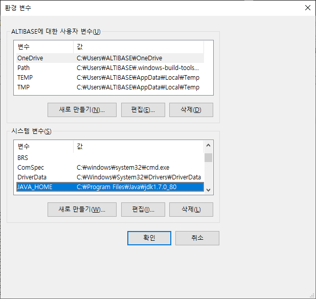
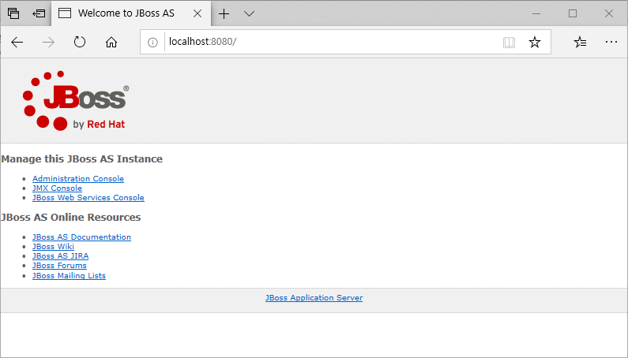

Installing JBoss
This chapter describes how to install and run JBoss, how to set environment variables, how to bind IP addresses, and the directory structure of Jboss.
Installation Requirements
Because JBoss is an application that is certified by the Java EE 6 Standard, JDK 1.6 to later must be installed to use JBoss.
JDK 1.7 was used in the test environment.
Basic Installation
To install JBoss, download the package of the corresponding version from the JBoss homepage. (http://www.jboss.org/jbossas/downloads)
After downloading the package, unzip it using a compression tool in the Windows environment, and unzip command in the Unix environment.
unzip jboss-6.1.0.GA.zip … inflating: jboss-6.1.0.GA/server/web/deployers/jboss-jca.deployer/jboss-jca-deployer.jar inflating: jboss-6.1.0.GA/server/web/deployers/jbossweb.deployer/web.xml inflating: jboss-6.1.0.GA/server/web/deployers/metadata-deployer-jboss-beans.xml inflating: jboss-6.1.0.GA/server/web/deployers/security-deployer-jboss-beans.xml #
In this document, jboss-6.1.0.Final directory created by unpacking is named JBOSS_HOME. JBoss installs is completed by unzipping the package, and it can be run after configuring the JDK.
Windows environment JDK setting
How to set JDK in Windows environment is as follows, and select one of two methods to set it.
- Add the JAVA_HOME variable to the system environment variable.

- Add to the JOBSS_HOME/bin/run.bat file, which is a BJoss running script.
@echo off rem ------------------------------------------------------------------------- rem JBoss Bootstrap Script for Windows rem ------------------------------------------------------------------------- rem $Id: run.bat 111395 2011-05-18 07:45:07Z beve $ set JAVA_HOME=C:\Program Files\java\jdk1.7.0 ← Add JDK path @if not "%ECHO%" == "" echo %ECHO% @if "%OS%" == "Windows_NT" setlocal if "%OS%" == "Windows_NT" ( set "DIRNAME=%~dp0%" ) else ( set DIRNAME=.\ ) ……
Unix environment JDK setting
How to set JDK in the Unix environment is as follows, and select one of four methods to set it.
Add the JAVA_HOME variable to the system environment variable
Add to the JBOSS_HOME/bin/run.sh file, which is a JBoss startup script
#!/bin/sh ### ====================================================================== ### ## ## ## JBoss Bootstrap Script ## ## ## ### ====================================================================== ### ### $Id: run.sh 111395 2011-05-18 07:45:07Z beve $ ### # Extract the directory and the program name JAVA_HOME=/usr/jdk/jdk1.7.0 ← Add JDK path* …… |
JBoss directory structure
When JBoss is installed, the following directories are created.
- JBOSS_HOME
- bin: JBOSS related shell script directory
- common: Libraries commonly used in all server configurations
- client: JAR file directory required for client operation
- docs: XML schema and example configuration files directory
- lib: JAR file directory required to run JBOSS
- server: JBOSS server configuration directory
- all: Configuration that supports HA, clustering, and CORBA including Java EE
- default: Configuration that provides Web, EJB, web and additional services
- standard: Configuration that supports Web, EJB, jCA, JMS, Seam, Webservice, Console
- web: Configuration supporting Web, EJB, Security, Console
- minimal: Configuration that supports only minimal functions
- conf: Directory containing basic configuration information for security, logging, Boostrap, and JBOSS
- data: Data directory required for JBOSS operation
- deploy: JBOSS Service and application distribution directory
- deployers: Deployer directory based on the JBOSS Microcontainer
- lib: JAR file directory required for the JBOSS operation
- log: Logging directory
- tmp: JBOSS temporary directory Ex.) JSP file of WAR file
- work: JBOSS working directory Ex.) Java file for JSP
Running JBoss
JBoss can be started by installing JBoss and configuring JDK.
In the Unix environment, it can be run by executing JBOSS_HOME/bin/run.sh script, and in the Windows environment, it can be run by executing JBOSS_HOME/bin/run bat batch file.
# sh run.sh … 16:44:55,672 INFO [xnio] XNIO Version 2.1.0.CR2 16:44:55,678 INFO [nio] XNIO NIO Implementation Version 2.1.0.CR2 16:44:55,858 INFO [remoting] JBoss Remoting version 3.1.0.Beta2 16:44:55,907 INFO [TomcatDeployment] deploy, ctxPath=/ 16:44:55,960 INFO [HornetQServerImpl] trying to deploy queue jms.queue.ExpiryQueue 16:44:56,026 INFO [HornetQServerImpl] trying to deploy queue jms.queue.DLQ 16:44:56,039 INFO [service] Removing bootstrap log handlers 16:44:56,078 INFO [org.apache.coyote.http11.Http11Protocol] Starting Coyote HTTP/1.1 on http-127.0.0.1-8080 16:44:56,080 INFO [org.apache.coyote.ajp.AjpProtocol] Starting Coyote AJP/1.3 on ajp-127.0.0.1-8009 16:44:56,081 INFO [org.jboss.bootstrap.impl.base.server.AbstractServer] JBossAS [6.1.0.Final "Neo"] Started in 19s:637ms
When JBoss is running normally, "Started" is displayed in the last log message, and the user can check whether JBoss is running normally by accessing the web console (http://server_ip:port number).
By accessing the Administration Console with an admin account (password: admin), the user can operate the currently running JBoss.

Shutting JBoss Down
To shut down JBoss, execute the JBOSS_HOME/bin/shutdown.sh or shutdown.bat script.
# sh shutdown.sh –S ← When running with localhost Shutdown message has been posted to the server. Server shutdown may take a while - check logfiles for completion #
Considerations when running and shutting down JBoss
When starting JBoss and shutting it down, these are some of the considerations.
Error due to port duplication while running
In JBoss, the default port is "8080".
However, if this port is being used by another program, the following error occurs when starting JBoss, so it is necessary to change the port.
DEPLOYMENTS IN ERROR: Deployment "WebServer" is in error due to the following reason(s): LifecycleException: Protocol handler initialization failed: java.net.BindException: Address already in use /127.0.0.1:8080
To change the JBoss default port, modify the connector port in the JBOSS_HOME/server/default/deploy/jbossweb.sar/server.xml file.
<Connector protocol="HTTP/1.1" port="8088" address="${jboss.bind.address}" redirectPort="${jboss.web.https.port}" />